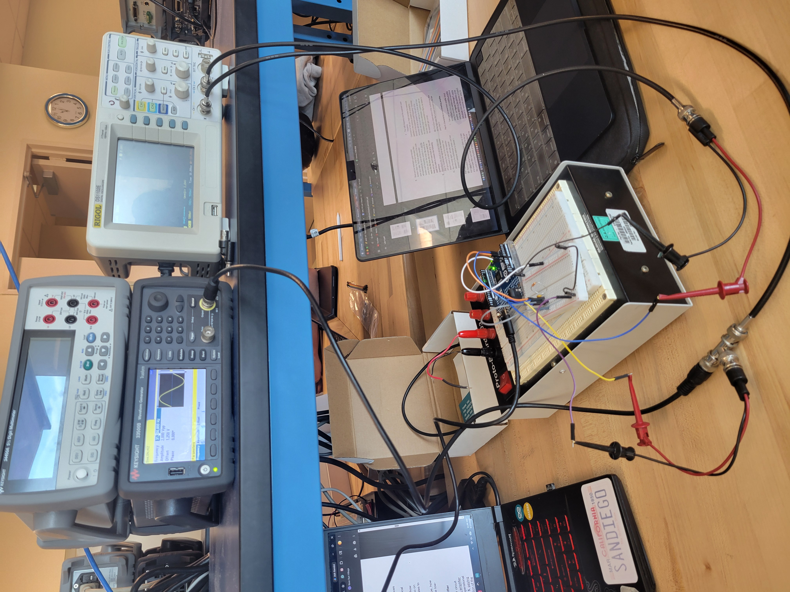
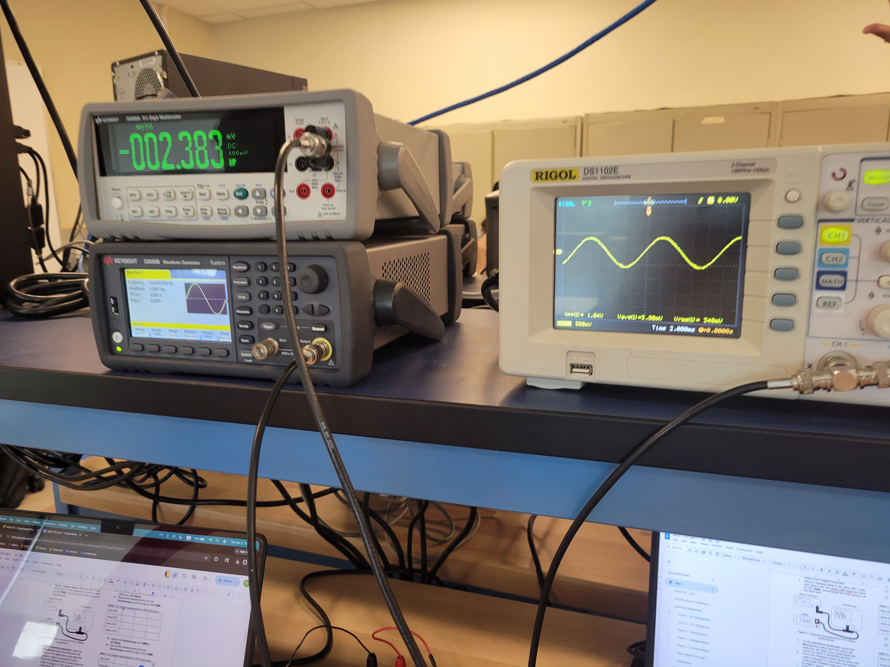
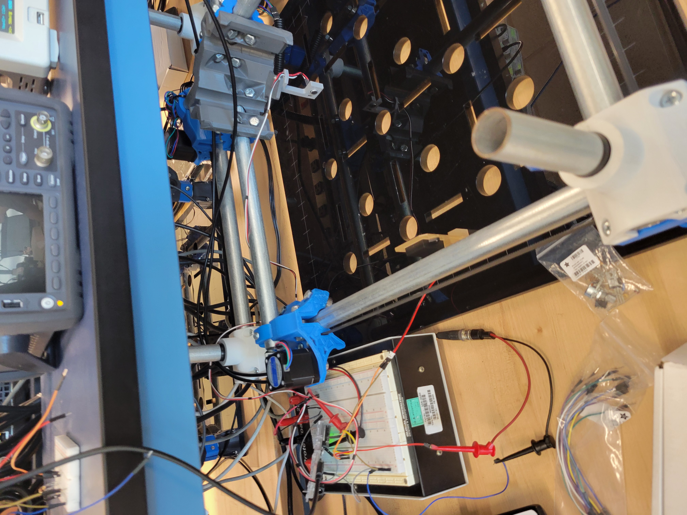
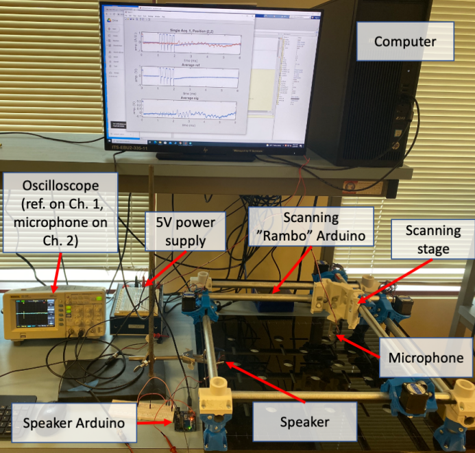
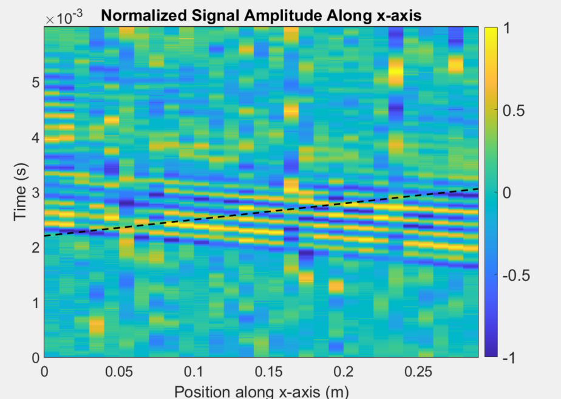
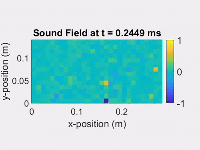

Welcome to my engineering portfolio: a collection of projects, designs, and work
that reflect my interests in mechanical engineering, design, and problem-solving.
I am a mechanical engineering undergraduate at UC San Diego with a concentration in fluid and
thermal sciences. My interests focus on applying engineering principles to real-world design
challenges involving mechanical systems, manufacturing, and structural design. Through coursework,
hands-on projects, and engineering clubs, I have developed experience in CAD modeling using
Fusion 360, and AutoCAD, along with fabrication techniques including CNC machining,
manual milling, lathe operations, laser cutting, and mechanical assembly. My project experience
includes rapid prototyping, propulsion testing, tolerance-based manufacturing, and iterative design
validation through experimental testing and subsystem integration.
Objective: Design and optimize a mission-specific fixed-wing aircraft for the AIAA Design Build Fly competition with emphasis on payload integration, aerodynamic performance, and reliable banner deployment. Personal Contribution: Contributed to laser-cut fabrication, propulsion testing, subsystem integration, and aircraft assembly using AutoCAD, balsa, birch wood, styrofoam, and monokote materials. Results: Improved press-fit assembly accuracy and reduced fabrication rework by applying 0.06 in kerf compensation to laser-cut manufacturing workflows.
Objective: Investigate the effects of fuel and oxidizer injector geometry on vortex formation, pressure, velocity, and turbulent mixing within a vortex-cooled rocket engine using ANSYS Fluent. Personal Contribution: Developed the CFD model by parameterizing injector geometry, generating the computational mesh, configuring Fluent simulations, and analyzing velocity, pressure, and turbulence contours across multiple design configurations. Results: Evaluated six injector configurations and identified how inlet geometry influences vortex strength, chamber pressure, flow velocity, and turbulent mixing to support future engine design improvements.
Objective: Manufacture and assemble a functional projectile launcher while applying precision machining and safe operating procedures using CNC mills, manual mills, and lathes. Personal Contribution: Interpreted engineering drawings and machined aluminum, stainless steel, and PMMA components through CNC programming, threading, drilling, chamfering, tapping, and tolerance-critical finishing operations. Results: Successfully produced threaded and precision-machined assemblies with dimensional tolerances as tight as ±0.003 in and an average launch distance of 8 ft.
Spring 2026
Acoustic Wave Propagation






Objective: Characterized the spatiotemporal behavior of a 5 kHz acoustic wave using a speaker,
microphone, oscilloscope, Arduino signal generation, and MATLAB-based data acquisition to evaluate signal quality and wave propagation. Personal Contributions: Processed experimental microphone data in MATLAB to compare single-acquisition and 64-sample
averaged signals, generate pcolor visualizations in MATLAB, estimate sound speed, and analyze uncertainty from noise, arrival-time selection,
and scanning-stage positioning error. Results: Demonstrated that averaging 64 acquisitions reduced random noise by a factor of 8, estimated the experimental
speed of sound, and created spatial sound-field visualizations across a 30 cm × 15 cm scanned region to show acoustic
pulse propagation over time.
Spring 2024
RC Projectile Robot
Objective: Design and fabricate a competition robot capable of collecting and launching projectiles into elevated scoring zones during a 60-second head-to-head robotics competition. Personal Contribution: Collaborated within a 4-person engineering team to model, prototype, manufacture, and test drivetrain, intake, and flywheel launcher subsystems using Fusion 360, AutoCAD, laser cutting, and machining workflows. Results: Improved traction performance, projectile feed reliability, and launch consistency through iterative testing, root cause analysis, and subsystem refinements.